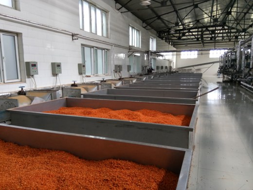
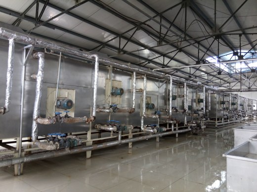
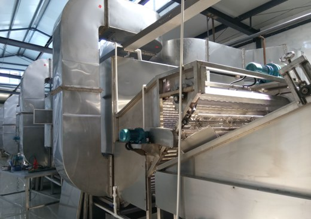
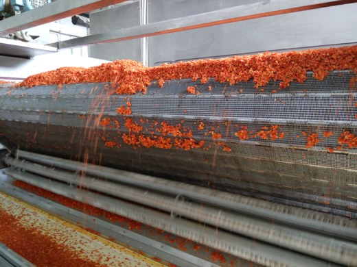

About Us
Founded in 2014, Qingdao Best-Integrity Trade Co., Ltd. has been engaged in the dehydrated vegetable and ingredients industry long before our official establishment. Over the years, we have earned a reputation for honesty, reliability, and lasting partnerships.
Unlike many suppliers who simply trade bulk commodities, we focus on making your sourcing experience worry-free. Our strength lies in:
- Breadth + Specialty – A full range of dehydrated vegetables, food ingredients, and pet food ingredients, with sweet potato pellets as a flagship export shipped in large volumes every year.
- Safety Beyond Standards – Not only certified (ISO, HACCP, BRC, Kosher, Halal) but also backed by strict internal controls for lot retention and traceability.
- Delivery You Can Count On – Clear production schedules and punctual shipments, helping you reduce risk and keep your supply chain stable.
- Customer-Oriented Flexibility – Tailored specifications, small-batch sampling, and the ability to extend your product range as your market evolves.
In a competitive market where many suppliers look alike, our difference is simple: We are not just selling ingredients, we are building confidence.
With strong exports to the EU, US, Japan, and Korea, our mission is to ensure that every order you place is remembered for its quality, safety, and reliability.
